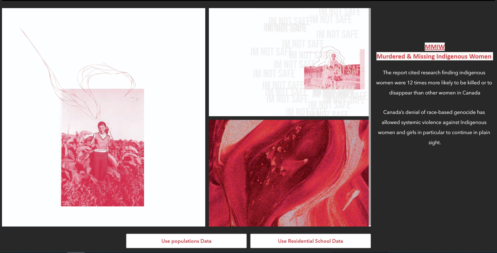
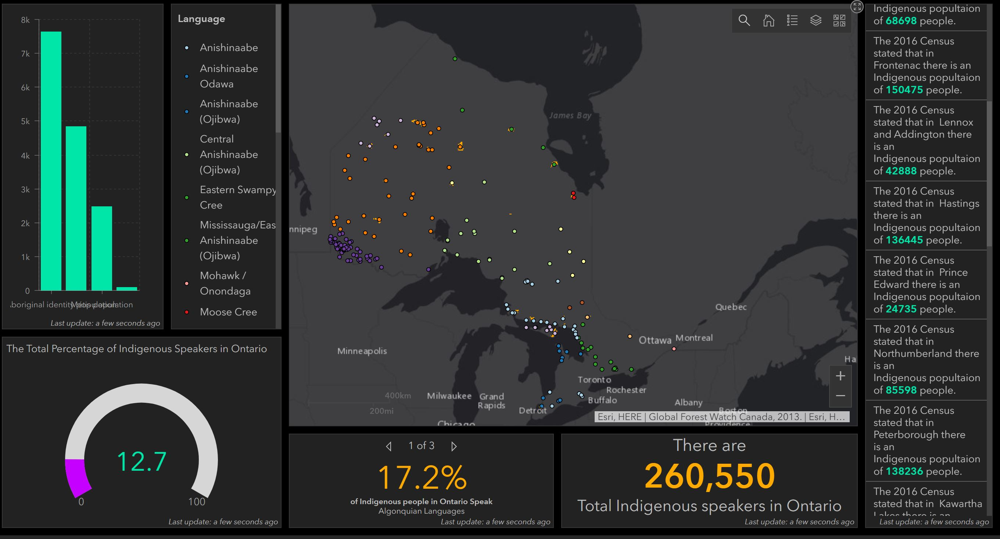
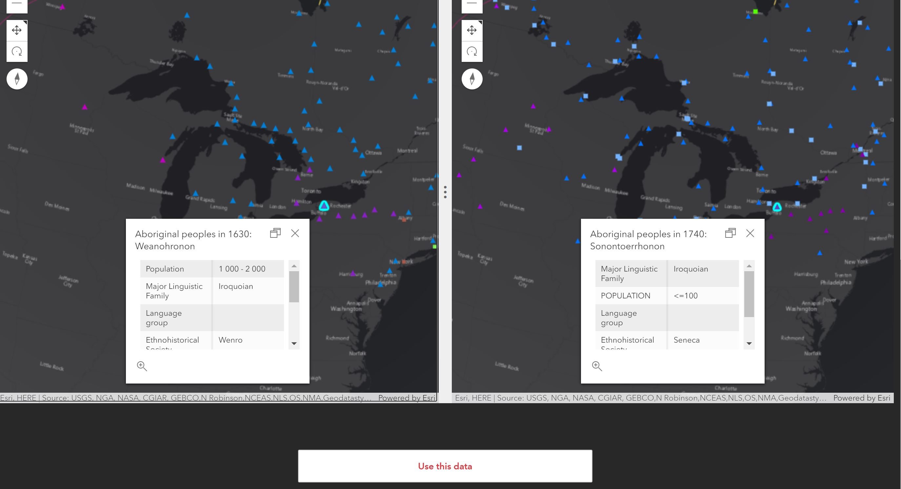

Final Product : Reclaiming Geospatial Data and Decolonizing GIS Design
Limitations to this Web Application and things we would do differently
After completing this project, we have successfully created a web app that maps Indigenous data and helps aid in learning the true history of these lands. However, there are some limitations and improvements that we would would like to accomplish in the future. One improvement that we would like to look more into is the interactivity of the app. Currently, our web app does not have much interaction with the user so in the future we would like to create more activity and exploration on the web app. This could be done by having a page where users could submit data or have the Dashboard elements on the Dashboard move when you zoom into an area. Another improvement that we would like to add to our app is regarding screen size. In the future we would like our app to be useable in all different screen sizes because currently, when the screen size switches to the size of a phone or tablet, the Dashboards become a lot harder to see.
Landing Page

Comparing population data to Residential Schools
Use this data buttons
Story Map of Residential Schools
Languages Dashboard
Download this fixed data button
Compare 1630 to 1740 Settlements
